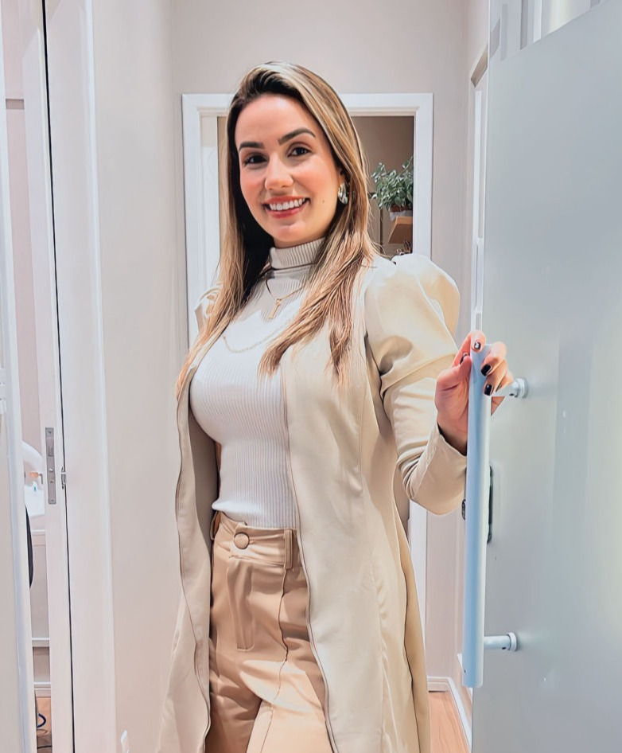
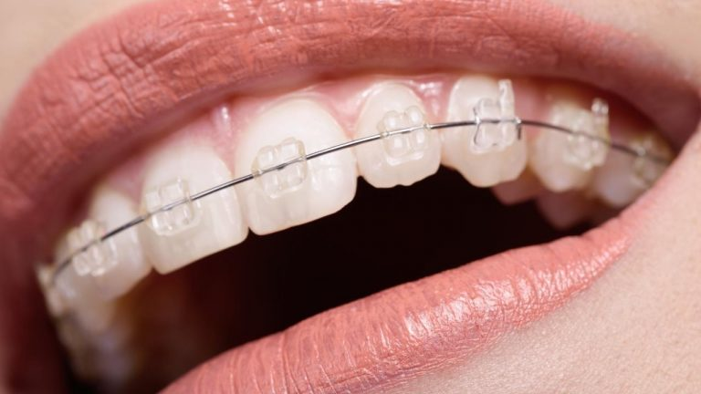
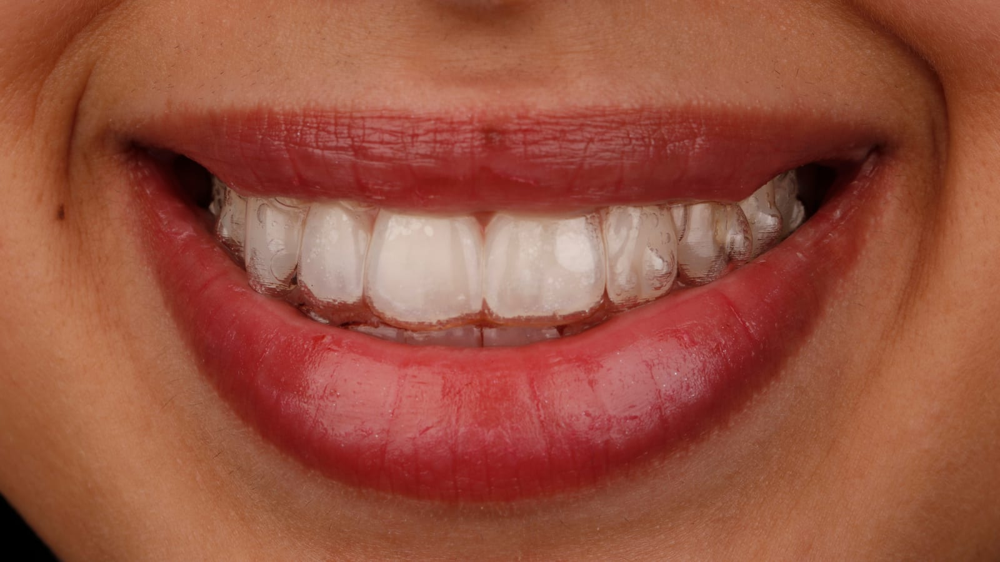
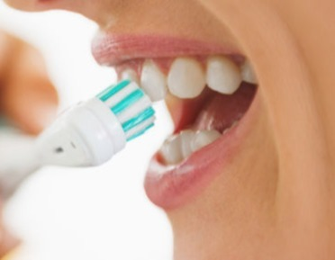
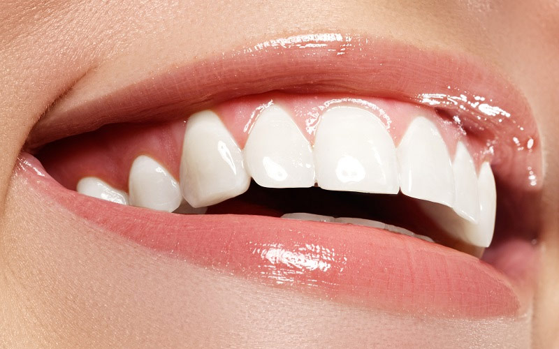
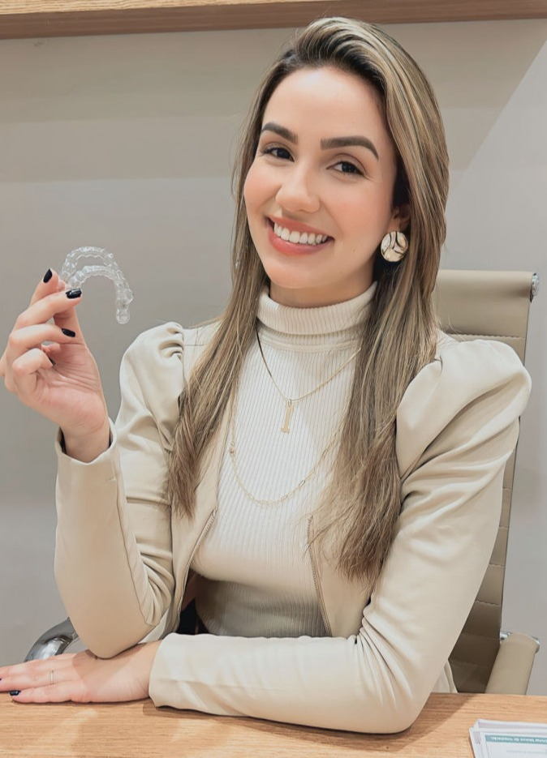

Sua melhor versão começa com um sorriso saudável
Especialista em Ortodontia em Petrópolis. Aparelhos, alinhadores invisíveis e estética facial, com um cuidado pensado pra você se sentir bem em cada etapa do tratamento.

Dra. Isabelle Guimarães@draisabelleguimaraes
Tratamentos que cuidam do seu sorriso
Da ortodontia à estética facial, cada tratamento é pensado pra funcionar na sua rotina e trazer resultados reais.

Ortodontia
Aparelho convencional e aparelhos estéticos, com acompanhamento em cada etapa.

Alinhador Invisível
Mais previsibilidade, sem restrição alimentar: remova pra comer e pra higienizar.
Estética
Aplicação de Toxina Botulínica: botox preventivo, para sorriso gengival e linhas de expressão.

Clínica Geral
Check-up, limpeza de tártaro, tratamento de cárie e restauração estética.

Clareamento
Clareamento caseiro ou de consultório, com protocolo anti sensibilidade.
Como funciona o seu tratamento?
Um passo a passo simples pra você entender exatamente o que esperar, do primeiro contato ao sorriso pronto.
01
Primeira consulta
Avaliação completa pra entender a posição dos seus dentes e o que seu sorriso precisa.
02
Plano personalizado
Indicação do tratamento ideal para o seu caso: aparelho, alinhador ou estética.
03
Acompanhamento contínuo
Ajustes e cuidado em cada etapa até você alcançar o resultado que quer.
Áreas em que atuo

Quem é a Dra. Isabelle Guimarães?
- A paixão por ajudar o próximo me levou ao caminho da Odontologia, culminando em uma carreira que me permite oferecer cuidados de saúde de alta qualidade.
- Como Ortodontista, trago uma abordagem única pra tratar cada paciente, encontrando soluções confortáveis e eficazes.
- Graduada em Odontologia pela UNIFASE (Petrópolis/RJ) e Pós-graduada em Ortodontia pelo Instituto Smile (Niterói/RJ). CRORJ 50571.
- Meu maior objetivo é fazer você se sentir especial e à vontade no consultório odontológico.
O que as minhas pacientes dizem sobre meu atendimento?
Histórias reais de quem já passou pelo consultório.
Ótima experiência! Dra. Isabelle é super carinhosa e atenciosa! Meus dentes estão ficando perfeitos com meus aparelhos e a limpeza deixou eles bem branquinhos!
Tenho síndrome do pânico e pavor de dentista desde que eu era pequena. A Dra foi um anjo, super paciente e me explicou tudo direitinho pra eu não ter medo de nada. A melhor de todas, com toda certeza!
Ótimo atendimento, resolveu meu problema de forma prática e eficaz.
Eu e minha família toda cuidamos com ela. Sempre nos deixa à vontade e tem mãos de fada!
Onde você pode me encontrar?
Será um prazer te receber no nosso consultório em Petrópolis, pensado para oferecer conforto em cada consulta.
Rua Dr. Nelson de Sá Earp, 95 — Shopping Bauhaus Expansão, Sala 311, Centro / Petrópolis-RJ
Ainda com dúvidas? Eu te explico tudo
Ortodontia com aparelhos convencionais e estéticos, alinhadores invisíveis, clínica geral, clareamento dental e procedimentos estéticos como Botox.
Sim. O tratamento ortodôntico pode começar a partir da dentição de leite completa (por volta dos 4 anos) ou em qualquer fase da vida adulta.
O alinhador é removível — você tira pra comer e higienizar, sem restrição alimentar. Já o aparelho fixo é indicado conforme a avaliação de cada caso. Na consulta a gente define juntas(os) a melhor opção.
Fale com a gente pelo WhatsApp pra confirmar as condições de atendimento e formas de pagamento.
É só chamar no WhatsApp — a gente confirma o melhor horário pra você.
Pronta(o) para dar o próximo passo?
Agende sua consulta e dê o primeiro passo para o sorriso que você quer.